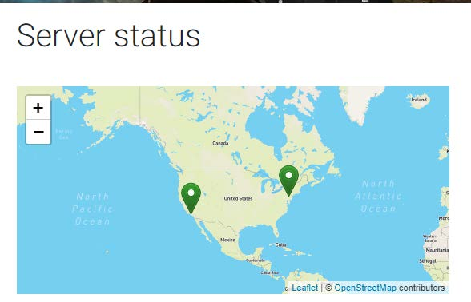
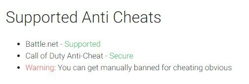

Case 2:22-cv-00051-MWF-JC Document 27 Filed 09/16/22 Page 1 of 48 Page ID #:441
1 MARC E. MAYER (SBN 190969)
mem@msk.com
2 MARK C. HUMPHREY (SBN 291718)
mxh@msk.com
3 GENEVIEVE L. JAVIDZAD (SBN 336138)
glj@msk.com
4 MITCHELL SILBERBERG & KNUPP LLP
2049 Century Park East, 18th Floor
5 Los Angeles, CA 90067-3120
Telephone: (310) 312-2000
6 Facsimile: (310) 312-3100
7 Attorneys for Plaintiff
8
UNITED STATES DISTRICT COURT
9
CENTRAL DISTRICT OF CALIFORNIA
10
11 ACTIVISION PUBLISHING, INC., a
CASE NO. 2:22-cv-00051-MWF (JCx)
12 Delaware corporation,
[Assigned to Judge Michael W. Fitzgerald]
13
Plaintiff,
AMENDED COMPLAINT FOR:
14
v.
(1) TRAFFICKING IN
15 ENGINEOWNING UG, a German
CIRCUMVENTION DEVICES;
corporation, CMM HOLDINGS S.A., a
16 German corporation, GARNATZ
(2) FALSE DESIGNATION OF
ENTERPRISE LTD, a Belize
ORIGIN;
17 Corporation, VALENTIN RICK,
LEONARD BUGLA, LEON FRISCH,
(3) VIOLATION OF THE
18 IGNACIO GAYDUCHENKO, MARC-
COMPUTER FRAUD AND ABUSE
ALEXANDER RICHTS,
ACT;
19 ALEXANDER KLEEMAN, LEON
SCHLENDER, ERICK PFEIFER,
(4) INTENTIONAL
20 BENNET HUCH, ZAIN JONDAH,
INTERFERENCE WITH
RICKY SZAMEITAT, MARCEL
CONTRACTUAL RELATIONS;
21 BINDEMANN, ALEXANDER
KLEEMANN, REMO LÖFFLER,
(5) UNFAIR COMPETITION;
22 MARVIN BAOTIC NEUMEYER,
HENDRIK SMAAL, CHARLIE
(6) VIOLATIONS OF THE
23 WIEST, DENNIS REISSLEICH,
RACKETEERING INFLUENCED
TYLER BYRD, SIMON MASIAS,
AND CORRUPT
24 NICHOLAS JAMES BALDWIN,
ORGANIZATIONS ACT, 18 U.S.C.
ANTONIO MEDIAN, REMY
§ 1962(C);
25 CARTIGNY, PASCAL CLASSEN,
MANUEL T. SANTIAGO, AND
(7) VIOLATIONS OF THE
26 KATERINA DISDLE, and DOES 1-50,
RACKETEERING INFLUENCED
inclusive,
AND CORRUPT
27
ORGANIZATIONS ACT, 18 U.S.C.
Defendants.
§ 1962(D)
Mitchell
28
Silberberg &
Knupp LLP
Demand For Jury Trial
14793462.1
Case 2:22-cv-00051-MWF-JC Document 27 Filed 09/16/22 Page 2 of 48 Page ID #:442
1
Activision Publishing, Inc. (“Activision” or “Plaintiff”) alleges as follows:
2
PRELIMINARY STATEMENT
3
1.
Activision is the owner and publisher of the Call of Duty series of
4 video games (the “COD Games”). By this lawsuit, Activision seeks to put a stop
5 to unlawful conduct by a multi-national business enterprise that is distributing and
6 selling for profit numerous malicious software products designed to enable
7 members of the public to gain unfair competitive advantages (i.e., to cheat) in the
8 COD Games. These ongoing activities damage Activision’s games, its overall
9 business, and the experience of the COD player community.
10
2.
EngineOwning (“EO” or the “Enterprise”) is a commercial enterprise
11 consisting of a German business entity and more than a dozen individuals
12 (collectively, “Defendants”). Defendants collectively and jointly are engaged in
13 the development, sale, distribution, marketing, and exploitation of a portfolio of
14 malicious cheats and hacks for popular online multiplayer games, most
15 prominently the COD Games. Via their official website (www.engineowning.to)
16 (the “EO Website”) and other related websites and social media accounts, EO and
17 numerous affiliated individuals and resellers sell cheats for numerous COD Games,
18 including without limitation Call of Duty: Warzone, Call of Duty: Modern Warfare
19 (2019), Call of Duty World War II, Call of Duty: Modern Warfare III; Call of Duty
20 Black Ops, Call of Duty Black Ops II, and Call of Duty Black Ops III (collectively,
21 the “Cheating Software”). EO has also recently released new cheating software for
22 the popular multiplayer game Overwatch, which is published by Activision’s
23 affiliate, Blizzard Entertainment, Inc. The Cheating Software enables players to
24 manipulate the COD Games to their personal advantage, such as by automatically
25 aiming weapons, revealing the locations of opponents, and allowing the player to
26 see information that is not normally available to players because it would give
27 them an unfair advantage within the game.
Mitchell
28
Silberberg &
Knupp LLP
2
14793462.1
Case 2:22-cv-00051-MWF-JC Document 27 Filed 09/16/22 Page 3 of 48 Page ID #:443
1
3.
The COD Games are designed to be enjoyed by and fair for all
2 players. When players use exploits like the Cheating Software, such conduct
3 disturbs game balance and in many cases leads non-cheating players to quit
4 matches in frustration. Widespread cheating also can lead to negative social media
5 posts and headlines in the press, which can impact consumer confidence.
6 Accordingly, Activision has spent and continues to spend an enormous amount of
7 resources to combat cheating in its games. Notwithstanding those efforts,
8 Defendants’ sale and distribution of the Cheating Software has caused Activision
9 to suffer massive and irreparable damage to its goodwill and reputation and to lose
10 substantial revenue.
11
4.
In creating, marketing, selling, servicing, and distributing the
12 Cheating Software, Defendants have engaged in numerous unlawful acts under
13 United States and California law. Defendants have violated Section 1201 of the
14 Digital Millennium Copyright Act (“DMCA”), 17 U.S.C. § 1201(b)(1), by selling,
15 importing, offering, providing, and otherwise trafficking in technologies that
16 circumvent or evade anti-cheat technologies used by Activision to protect the
17 integrity of the COD Games. Moreover, by selling (or including with their
18 products) so-called “hardware ID” (“HWID”) spoofers, Defendants enable
19 members of the public to access restricted services for which they have previously
20 been denied access. Defendants also have knowingly, intentionally, and
21 maliciously interfered with and disrupted the contracts Activision has with its
22 customers in the United States, which explicitly prohibit the exact type of cheating
23 that Defendants enable, encourage, and solicit by marketing and selling their
24 Cheating Software. Defendants have engaged in unfair competition pursuant to
25 California Business & Professions Code § 17200 et seq. and under California
26 common law, by operating an unlawful, unfair, and/or fraudulent business.
27 Finally, Defendants have committed violations of the Racketeering Influenced and
Mitchell
28
Silberberg &
Knupp LLP
3
14793462.1
Case 2:22-cv-00051-MWF-JC Document 27 Filed 09/16/22 Page 4 of 48 Page ID #:444
1 Corrupt Organizations Act (“RICO”), 18 U.S.C. §§ 1962(c) and 1962(d) by
2 conducting and participating in an enterprise engaged in racketeering activity.
3
5.
Defendants not only know that their conduct is unlawful, but they
4 engage in that conduct with the deliberate intent to harm Activision, its businesses,
5 and its player community. This Court must put a stop to Defendants’ misconduct,
6 and Activision is entitled to monetary damages, injunctive and other equitable
7 relief, and punitive damages against Defendants.
8
9
JURISDICTION AND VENUE
10
6.
This is a civil action seeking damages, injunctive relief, and other
11 equitable relief under the anti-circumvention provisions of the DMCA, 17 U.S.C. §
12 1201, and the laws of the State of California.
13
7.
This Court has subject matter jurisdiction over Activision’s claims for
14 violating the anti-circumvention provisions of the DMCA pursuant to 28 U.S.C. §§
15 1331 and 1338(a). Pursuant to 28 U.S.C. § 1367, this Court has supplemental
16 jurisdiction over Activision’s state law claims for intentional interference with
17 contract and unfair competition, which are so related to Activision’s federal claims
18 as to be part of the same case or controversy.
19
8.
This Court has personal jurisdiction over each of the Defendants, and
20 over the Enterprise as a whole, because Defendants and the Enterprise have
21 purposefully directed their activities at the United States, and at California in
22 particular, have purposefully availed themselves of the benefits of doing business
23 in California, and have established a continued presence in California. Activision
24 is informed and believes, and on that basis alleges, that, without limitation:
25
(a)
The only purpose of the Cheating Software is to harm a video
26 game developed and published by Activision in the State of California. Thus, the
27 Cheating Software was developed and designed to target Activision and its
Mitchell
28 products, to devalue the massive investment Activision has made in the COD
Silberberg &
Knupp LLP
4
14793462.1
Case 2:22-cv-00051-MWF-JC Document 27 Filed 09/16/22 Page 5 of 48 Page ID #:445
1 Games, and to degrade the work of developers, programmers, artists, game
2 designers, software engineers, online security experts, and others who worked on
3 the COD Games. Indeed, the Cheating Software is parasitic in nature, in that it
4 derives value only from the COD Games and its very existence relies on
5 Activision’s continued support for the COD Games, which were created in
6 California and published by a California company.
7
(b)
Defendants conduct extensive and ongoing business with users
8 in the State of California and the United States. Among the customers of the
9 Cheating Software are high-profile streamers of the COD Games who reside in the
10 United States.
11
(c)
Defendants target the Cheating Software to users in the United
12 States, including in the State of California, knowing that a substantial market exists
13 for their Cheating Software in the United States. For example, Defendants display
14 all of the text of their website in “English (US),” offer special sales around U.S.
15 holidays (such as Halloween and Black Friday), and provide customer service in
16 English. Defendants know that the COD Games have an enormous audience in the
17 United States, and thus have taken steps to ensure that the Cheating Software is
18 readily available and accessible to U.S. users.
19
(d)
Defendants distribute the Cheating Software in the State of
20 California, advertise and market the Cheating Software in the United States and the
21 State of California, and communicate directly with users in the United States and
22 in the State of California, including for the purposes of soliciting purchases of the
23 Cheating Software by such users and providing technical support for the Cheating
24 Software;
25
(e)
Defendants recruit individuals in the United States to distribute
26 the Cheating Software in (and from) the United States, and specifically, California,
27 by reselling it to consumers located there, resulting in revenue for EO in an amount
Mitchell
28 to be determined at trial;
Silberberg &
Knupp LLP
5
14793462.1

Case 2:22-cv-00051-MWF-JC Document 27 Filed 09/16/22 Page 6 of 48 Page ID #:446
1
(f)
Defendants have entered into, and continue to enter into,
2 contracts with individuals in the State of California, including contracts pursuant to
3 which these individuals license from Defendants the right to install and use the
4 Cheating Software. In return for such licenses, Defendants receive ongoing
5 recurring daily, weekly, or monthly payments from individuals in the United States
6 and the State of California;
7
(g)
Defendants create online “groups” or “chat rooms” using
8 services and platforms based in the United States, such as California-based Discord
9 and Seattle-based Valve Corporation. Activision is informed and believes, and on
10 that basis alleges, that these groups and chat rooms conduct conversations in
11 English and are comprised of a large number of users located in the United States.
12
(h)
Defendants contract with entities located in the State of
13 California in connection with their businesses. This includes, for example, domain
14 name registries, hosting or content delivery services, as well as credit card
15 processors and merchant banks. In fact, Defendants boast on their website that
16 they maintain at least two servers in the United States, including one in Los
17 Angeles, California and another in New Jersey:
18
19
20
21
22
23
24
25
26
27
Mitchell
28
Silberberg &
Knupp LLP
6
14793462.1
Case 2:22-cv-00051-MWF-JC Document 27 Filed 09/16/22 Page 7 of 48 Page ID #:447
1 These servers are necessary for Defendants’ customers to activate and use the
2 Cheating Software.
3
(i)
Defendants engage in conduct that they know is likely to cause
4 harm to Activision in the State of California, including in this District, where
5 Activision is located and has its principal place of business. In fact, Defendants
6 have engaged in a pattern of online “trolling” of Activision and its counsel, such as
7 by creating fake accounts in the name of Activision’s counsel, posting fake
8 messages that purport to be from Activision’s counsel, or using the names of
9 Activision’s counsel in their advertising.
10
9.
In undertaking the conduct described herein, each of the Defendants
11 has acted as an agent or representative of the EO Enterprise. All of the Defendants
12 have worked jointly and in cooperation with each other to effectuate the purposes
13 and aims of the EO Enterprise. Accordingly, the conduct of each agent of the
14 Enterprise should be imputed to all of the other agents and representatives, and
15 Defendants are jointly and severally liable for the conduct alleged herein.
16
10.
Venue is proper in this District pursuant to 28 U.S.C. § 1391(b)
17 because this is a judicial district in which a substantial part of the events giving rise
18 to the claims occurred, and/or in which Activision’s injuries were suffered.
19
20
THE PARTIES
21
11.
Activision is a corporation duly organized and existing under the laws
22 of the State of Delaware, with its principal place of business in Santa Monica,
23 California.
24
12.
Activision is informed and believes, and on that basis alleges, that the
25 Defendants in this action have worked or currently are working in concert as an
26 organization or enterprise called “EngineOwning” (“EO” or the “Enterprise”). The
27 purpose of the Enterprise is to develop, promote, distribute, sell, traffic in, and/or
Mitchell
28 maintain or offer support for Cheating Software, which allows users to circumvent
Silberberg &
Knupp LLP
7
14793462.1
Case 2:22-cv-00051-MWF-JC Document 27 Filed 09/16/22 Page 8 of 48 Page ID #:448
1 anti-cheating measures and gain authorized access to Activision’s servers even if
2 they have been previously banned for cheating. The Defendants work jointly and
3 collectively towards this common goal and purpose.
4
13.
Activision is informed and believes, and on that basis alleges, that the
5 Defendants function in a number of different roles in furtherance of the Enterprise.
6 For example, some defendants manage and oversee the Enterprise, while others
7 provide and supply the necessary software technology to be sold by the Enterprise.
8 Others act as sales or customer support agents, who support and facilitate the
9 common Enterprise by helping to distribute the product or ensuring that customers
10 are able to successfully use the product. Accordingly, Activision has grouped the
11 defendants into categories, as set forth below.
12
Corporate Defendants
13
14.
Activision is informed and believes, and on that basis alleges, that
14 Defendants CMM Holdings S.A. and EngineOwning Software UG are German
15 business entities headquartered in Pfaffenhofen an der Ilm, and that Defendant
16 Garnatz Enterprise Ltd is a business entity registered in the country of Belize.
17 (collectively, CMM Holdings S.A., EngineOwning Software UG, and Garnatz
18 Enterprise Ltd. are referred to as the “Corporate Defendants”). Activision is
19 informed and believes, and on that basis alleges, that the individual defendants
20 purport to engage in many of the activities described herein (including
21 development, maintenance, marketing, distribution, sale, and support for the
22 Cheating Software) through one or more of the Corporate Defendants.
23
15.
Activision is informed and believes, and on that basis alleges, that the
24 Corporate Defendants are not independent corporate entities, but instead are shell
25 companies created to shield the activities of the individual defendants, including
26 Defendants Valentin Rick, Leon Schlender, and “Crotle.” There exists a unity of
27 interest and ownership between the Corporate Defendants and the aforementioned
Mitchell
28 individual defendants, such that no separateness between these entities exists and
Silberberg &
Knupp LLP
8
14793462.1
Case 2:22-cv-00051-MWF-JC Document 27 Filed 09/16/22 Page 9 of 48 Page ID #:449
1 they are alter egos of one another. Adherence to the fiction of the separate
2 existence of the Corporate Defendants would sanction a fraud or promote injustice,
3 including by enabling certain of the individual defendants to hide behind corporate
4 shell companies, divert assets from such companies, or raise jurisdictional defenses
5 based on the existence of such companies. As a result, the Court should pierce the
6 corporate veil and find the individual defendants jointly and severally liable for
7 acts of infringement undertaken in the name of the Corporate Defendants.
8
Owners, Founders, and Leadership
9
16.
Activision is informed and believes, and on that basis alleges, that EO
10 was founded by, and currently is owned, run, overseen, managed, and primarily
11 operated by, a group of individuals, including those set forth below:
12
17.
Activision is informed and believes, and on that basis alleges, that
13 Defendant Valentin Rick a/k/a Skyfail (“Valentin”) is an individual residing in
14 Germany who founded and created the Corporate Defendants, is the sole managing
15 director and shareholder of the Corporate Defendants, and historically has been the
16 primary administrator of the EO Website. Activision is further informed and
17 believes, and on that basis alleges, that Valentin has been and continues to be the
18 de facto leader of EO, and in that capacity has directed and/or been responsible for
19 developing, maintaining, marketing, distributing, and selling the Cheating
20 Software. Activision previously contacted Valentin in 2018 and 2020 regarding
21 his involvement with EO and the EO Website, and in response he claimed to have
22 sold the EO Website to an unknown purchaser. Valentin has never provided any
23 evidence that such a sale took place, and Activision is informed and believes, and
24 on that basis alleges, that Valentin has continued to manage and operate EO and
25 the EO Website at all times relevant to this lawsuit.
26
18.
Activision is informed and believes, and on that basis alleges, that
27 Defendant Leon Schlender a/k/a Balkan, Lion, x7ion, LionV1, lionz0r,
Mitchell
28 moneyskyy, bcrypt, and s14 (“Schlender”) is an individual residing in Germany
Silberberg &
Knupp LLP
9
14793462.1
Case 2:22-cv-00051-MWF-JC Document 27 Filed 09/16/22 Page 10 of 48 Page ID #:450
1 who is a co-creator/co-founder of EO along with Valentin. Activision is further
2 informed and believes, and on that basis alleges, that Schlender has directed and/or
3 been responsible for developing, maintaining, marketing, distributing, and selling
4 the Cheating Software.
5
19.
Activision is informed and believes, and on that basis alleges, that
6 Defendant Erick Pfeifer, a/k/a Speedi13, Speedi, Spdy, and Speedy0407 (“Pfeifer”)
7 is an individual residing in Germany. Pfeifer is one of the founders and original
8 members of the Enterprise, and has acted as a coder and developer of the Cheating
9 Software since at least 2014 or 2015.
10
20.
Activision is informed and believes, and on that basis alleges, that
11 Defendant Bennet Huch, a/k/a TheBigBen, thebigben123, tbb123, tazzthebigben,
12 Benno, Benno1308, B3nn0, and vb2010helper (“Huch”), is an individual residing
13 in Germany. Huch at one time purported to be the owner of the EO website and
14 has acted as one of the primary administrators of the EO Website. Activision is
15 further informed and believes, and on that basis alleges, that Huch was among the
16 people primarily responsible for the development, maintenance, distribution, and
17 sale of the Cheating Software.
18
21.
Activision is informed and believes, and on that basis alleges, that
19 Defendant Leonard Bugla, a/k/a Reganmian and Noodleman (“Bugla”), is an
20 individual residing in Germany who is listed as, and appeared to act as, an
21 operations administrator of the EO Website in 2019 and 2020. Activision is
22 further informed and believes, and on that basis alleges, that in this role Bugla
23 enabled the development, maintenance, distribution, and sale of the Cheating
24 Software. Activision is further informed and believes, and on that basis alleges,
25 that Valentin and Bugla have a long-standing personal relationship dating back to
26 before EO and the EO Website were created (i.e., before 2012) and for many years
27 worked together to ensure the continued operation and profitability of EO and the
Mitchell
28 EO Website.
Silberberg &
Knupp LLP
10
14793462.1
Case 2:22-cv-00051-MWF-JC Document 27 Filed 09/16/22 Page 11 of 48 Page ID #:451
1
22. Activision is informed and believes, and on that basis alleges, that
2 Defendant Marc-Alexander Richts a/k/a x0000x and Twenty (“Richts”) is an
3 individual residing in Germany who has been involved with distributing and
4 selling the Cheating Software through EO and the EO Website, and has acted as
5 one of the primary moderators on the EO Website forums. In that role, Richts
6 ensured the continuing operation of the EO Website and regularly communicated
7 with both the developers and the purchasers of the Cheating Software.
8
Software Developers
9
23.
Certain of the individual defendants were and are responsible for
10 creating and developing the Cheating Software, as well as updating and modifying
11 the Cheating Software to overcome Activision’s efforts to detect the Cheating
12 Software.
13
24.
Activision is informed and believes, and on that basis alleges, that
14 Defendant Ignacio Gayduchenko, a/k/a Weather and Kokole (“Gayduchenko”), is
15 an individual residing in Spain who has acted as a coder and developer of the
16 Cheating Software, and who has provided technical support for the Cheating
17 Software through, among other venues, the EO Website.
18
25.
Activision is informed and believes, and on that basis alleges, that
19 Defendant Zain Jondah, a/k/a Zain, Reciate, zinbrownman, superzainny, and
20 DepressedToenail (“Jondah”) is an individual residing in the United Kingdom who
21 has acted as a coder and developer of the Cheating Software.
22
26.
Activision is informed and believes, and on that basis alleges, that
23 Defendant Ricky Szameitat a/k/a Requi, requi_dev, RequiDev, and Requiii
24 (“Szameitat”) is an individual residing in Germany who has acted as a coder and
25 developer of the Cheating Software.
26
27.
Activision is informed and believes, and on that basis alleges, that
27 Defendant Marcel Bindemann, a/k/a Kifferking, kifferking951, kifferking hacks,
Mitchell
28
Silberberg &
Knupp LLP
11
14793462.1
Case 2:22-cv-00051-MWF-JC Document 27 Filed 09/16/22 Page 12 of 48 Page ID #:452
1 kifferking1337, and 1337fameboy (“Bindemann”) is an individual residing in
2 Germany who has acted as a coder and developer of the Cheating Software.
3
Moderators, Administrators, and Support Representatives
4
28.
Certain of the individual defendants knowingly facilitated and enabled
5 the operation of EO by maintaining, administering, updating, and otherwise
6 supporting various online message boards, chat rooms, or other online locations
7 relating to the Cheating Software. These online locations include the EO Website
8 and the EO “official” Discord server, both of which serve as the primary location
9 for members of the public (including those in the United States) to learn about,
10 purchase, discuss, and obtain the Cheating Software. These individuals facilitated,
11 enabled, induced and otherwise supported the marketing, sale, and use of the
12 Cheating Software by providing customer support, payment support, and technical
13 support for the Cheating Software. These individuals also worked to market and
14 advertise the Cheating Software and to encourage and assist members of the
15 public, including individuals located in the United States, in purchasing and using
16 the Cheating Software.
17
29.
Activision is informed and believes, and on that basis alleges, that
18 Defendant Leon Frisch a/k/a Kraisie (“Frisch”) is an individual residing in
19 Germany who has acted as a lead moderator on the EO Website forums.
20 Activision is further informed and believes, and on that basis alleges, that in this
21 role Frisch assists with the sale of the Cheating Software, including without
22 limitation by providing technical support for cheats and communicating with
23 customers regarding payment for the Cheating Software.
24
30.
Activision is informed and believes, and on that basis alleges, that
25 Defendant Alexander Kleemann a/k/a A200k (“Kleemann”) is an individual
26 residing in Veitshöchheim, Germany, who has been involved in distributing the
27 Cheating Software and providing various administrative functions with regard to
Mitchell
28 the EO Website, including by acting as a moderator on the EO Website forums.
Silberberg &
Knupp LLP
12
14793462.1
Case 2:22-cv-00051-MWF-JC Document 27 Filed 09/16/22 Page 13 of 48 Page ID #:453
1
31.
Activision is informed and believes, and on that basis alleges, that
2 Defendant Remo Löffler a/k/a AimBRoT, KE xAimBRoT, KE AimBRoT, EO
3 Aimbrot, _AimBRoT, xAimBRoTHDx, Pappenpeter, and MrTimeWarpxxx
4 (“Löffler”), is an individual residing in Germany who has been involved in
5 providing various administrative functions with regard to the EO Website,
6 including by acting as a moderator on the EO Website forums.
7
32.
Activision is informed and believes, and on that basis alleges, that
8 Defendant Marvin Baotic Neumeyer a/k/a Bonser, m0t0rb3s1tz3n, Bonsai,
9 DieKakao, Austriaball, AustriaballÖ, xlRaizzerz, and Zhaviaa (“Neumeyer”) is an
10 individual residing in Germany who has acted as an administrator for EO’s
11 Discord account, and in that capacity has been responsible for assisting in the
12 development, updating, marketing, distribution, and sale of the Cheating Software,
13 and has provided support for the Cheating Software. Activision is further informed
14 and believes, and based thereon alleges, that Neumeyer also has acted as a Lead
15 Moderator for the EO Website forums.
16
33.
Activision is informed and believes, and on that basis alleges, that
17 Defendant Hendrik Smaal a/k/a logixx, Sniker, sniker_de, SnikerDE, and
18 Snikerberry21 (“Smaal”) is an individual residing in Germany who has provided
19 technical support for the Cheating Software through, among other venues, the EO
20 Website. Activision is further informed and believes, and on that basis alleges,
21 that Smaal also has acted as a moderator for the EO Website forums.
22
34.
Activision is informed and believes, and on that basis alleges, that
23 Defendant Charlie Wiest a/k/a Apollo, n0t_apollo, notapollo, and ApolloEO
24 (“Wiest”) is an individual residing in Germany who has provided technical support
25 for the Cheating Software through, among other venues, the EO Website.
26 Activision is further informed and believes, and on that basis alleges, that Chronos
27 also has acted as a moderator for the EO Website forums.
Mitchell
28
Silberberg &
Knupp LLP
13
14793462.1
Case 2:22-cv-00051-MWF-JC Document 27 Filed 09/16/22 Page 14 of 48 Page ID #:454
1
35.
Activision is informed and believes, and on that basis alleges, that
2 Defendant Dennis Reissleich a/k/a Koyz, KOYZRk, and koyz420 (“Reissleich”) is
3 an individual residing in Germany who has provided technical support for the
4 Cheating Software through, among other venues, the EO Website. Activision is
5 further informed and believes, and on that basis alleges, that Chronos also has
6 acted as a moderator for the EO Website forums.
7
36.
Activision is informed and believes, and on that basis alleges, that the
8 foregoing defendants overtly display and communicate a deep knowledge of the
9 COD Games and the Cheating Software that could only be the result of their
10 extensive play of the COD Games. Accordingly, each of these defendants
11 necessarily created online accounts with Activision and assented to Activision’s
12 Terms of Service and other related agreements. Only by doing so were they able
13 to access and download the COD Games, join multiplayer servers, and play the
14 COD Games.
15
Sellers and Resellers
16
37.
Certain of the individual defendants are engaged in selling the
17 Cheating Software on behalf of the Enterprise. These defendants processed
18 purchase orders made via the EO Website and sold the Cheating Software on
19 behalf of the other Defendants. Activision is informed and believes, and on that
20 basis alleges, that the following individuals intended to and did distribute and sell
21 the Cheating Software to users in the United States as agents or representatives of
22 the Enterprise.
23
38.
Activision is informed and believes, and on that basis alleges, that
24 Defendant Tyler Byrd a/k/a ByrdGaming, ECGx Byrd, tylerbyrd2000,
25 thereal_ghostd, and lGhostdl (“Byrd”) is an individual residing in North Carolina
26 who has been involved in direct sales of the Cheating Software, including via the
27 EO Website and the EO Discord, using the payment platform known as Stripe.
Mitchell
28
Silberberg &
Knupp LLP
14
14793462.1
Case 2:22-cv-00051-MWF-JC Document 27 Filed 09/16/22 Page 15 of 48 Page ID #:455
1 Activision is further informed and believes, and on that basis alleges, that Byrd has
2 acted as a moderator for the EO Website forums.
3
39.
Activision is informed and believes, and on that basis alleges, that
4 Defendant Simon Masias a/k/a Jagr034, jagr0399, _obeysimon, and masiassimon
5 (“Masias”) is an individual residing in New Jersey who has acted as a reseller for
6 the EO Cheating Software.
7
40.
Activision is informed and believes, and on that basis alleges, that
8 Defendant Nicholas James Baldwin a/k/a Kamay, getclonedbyfeds, and
9 clonedbyfeds (“Baldwin”) is an individual residing in Florida who has acted as a
10 reseller for the EO Cheating Software.
11
41.
Activision is informed and believes, and on that basis alleges, that
12 Defendant Antonio Median a/k/a DiscountDash, realdiscountdash, RappiFood, and
13 Berlin (“Median”) is an individual residing in Massachusetts who has acted as a
14 reseller for the EO Cheating Software.
15
42.
Activision is informed and believes, and on that basis alleges, that
16 Defendant Remy Cartigny a/k/a remzziecodservices, remzzie, Deez Nuts,
17 Frikandel, and TwistlinesZ (“Cartigny”) is an individual residing in the
18 Netherlands who has acted as a reseller for the EO Cheating Software.
19
43.
Activision is informed and believes, and on that basis alleges, that
20 Defendant Pascal Classen, a/k/a Proton, Proton1001, P1001, Proton909, and
21 Proton007 (“Classen”) is an individual residing in Germany who has acted as a
22 reseller for the EO Cheating Software.
23
44.
Activision is informed and believes, and on that basis alleges, that
24 Defendant Manuel T. Santiago a/k/a Hoodie, EOHoodie, hoodie1337, Hoodieee,
25 teamxcbs, xCantBeStopped, stendoh617, stendoh, and oSpahzy (“Santiago”) is an
26 individual residing in Massachusetts who has acted as a reseller for the EO
27 Cheating Software.
Mitchell
28
Silberberg &
Knupp LLP
15
14793462.1
Case 2:22-cv-00051-MWF-JC Document 27 Filed 09/16/22 Page 16 of 48 Page ID #:456
1
45.
Activision is informed and believes, and on that basis alleges, that
2 Defendant Katerina Disdle a/k/a sweetkatato and _sweetkatato (“Disdle”) is an
3 individual residing in the United Kingdom who has acted as a reseller for the EO
4 Cheating Software.
5
Doe Defendants
6
46.
Activision is informed and believes, and on that basis alleges, that the
7 following individuals, whose true names are yet unknown, are developers of the
8 Cheating Software, administrators of the EO Website, resellers and distributors of
9 the Cheating Software, and/or otherwise involved in the creation, marketing, and
10 distribution of the Cheating Software. Among the Doe defendants are the
11 individuals set forth below:
12
47.
Activision is informed and believes, and on that basis alleges, that
13 Defendant “Crotle” (referred to as “Boss” on the EO Website forums) is a high-
14 level member of EO whose location is unknown, who has a leadership role within
15 the organization, through which he or she participates and/or assists in the
16 development, maintenance, distribution and sale of the Cheating Software,
17 including as an administrator of the EO Website.
18
48.
Activision is informed and believes, and on that basis alleges, that
19 Defendant “Ben Garnatz” is an individual whose location is unknown. “Ben
20 Garnatz” may be an alias for one or more individuals actively engaged in the
21 creation and distribution of the Cheating Software, and the administration of the
22 EO Website.
23
49.
Activision is informed and believes, and on that basis alleges, that
24 Defendant “Enceladus” is an individual whose location is unknown, and who has
25 acted as an administrator of the EO Website. Activision is further informed and
26 believes, and on that basis alleges, that in this role Enceladus has enabled the
27 development, maintenance, distribution, and sale of the Cheating Software.
Mitchell
28
Silberberg &
Knupp LLP
16
14793462.1
Case 2:22-cv-00051-MWF-JC Document 27 Filed 09/16/22 Page 17 of 48 Page ID #:457
1
50.
Activision is informed and believes, and on that basis alleges, that
2 Defendant “Mortyy” is an individual residing in Europe who has acted as an
3 administrator of the EO Website. Activision is further informed and believes, and
4 on that basis alleges, that in this role Mortyy has enabled the development,
5 maintenance, distribution, and sale of the Cheating Software.
6
51.
Activision is informed and believes, and on that basis alleges, that
7 Defendant “SlapstiK” a/k/a b1g slap, is an individual residing in France who has
8 acted as an administrator of the EO Website. Activision is further informed and
9 believes, and on that basis alleges, that in this role SlapstiK has enabled the
10 development, maintenance, distribution, and sale of the Cheating Software.
11
52.
Activision is informed and believes, and on that basis alleges, that
12 Defendant “Ubervisor” is an individual residing in Europe who has acted as a
13 coder and developer of the Cheating Software, and who has provided technical
14 support for the Cheating Software through, among other venues, the EO Website.
15 Activision is further informed and believes, and on that basis alleges, that
16 Ubervisor also has acted as an administrator of the EO Website.
17
53.
Activision is informed and believes, and on that basis alleges, that
18 Defendant “Homie123” a/k/a Homie is an individual residing in Germany who has
19 acted as a Lead Moderator on the EO Website forums.
20
54.
Activision is informed and believes, and on that basis alleges, that
21 Defendant “LuoZheng” is an individual residing in Germany who has acted as a
22 coder and developer of the Cheating Software.
23
55.
Activision is informed and believes, and on that basis alleges, that
24 Defendant “jeuwifghue,” whose location is unknown, has acted as a coder and
25 developer of the Cheating Software.
26
56.
Activision is informed and believes, and on that basis alleges, that
27 Defendant “WhiteObama” is an individual residing in Europe who has acted as a
Mitchell
28 coder and developer of the Cheating Software.
Silberberg &
Knupp LLP
17
14793462.1
Case 2:22-cv-00051-MWF-JC Document 27 Filed 09/16/22 Page 18 of 48 Page ID #:458
1
57.
Activision is informed and believes, and on that basis alleges, that
2 Defendant “Chronos” a/k/a Chronus, and eo_chronos is an individual whose
3 location is unknown, and who has provided technical support for the Cheating
4 Software through, among other venues, the EO Website. Activision is further
5 informed and believes, and on that basis alleges, that Chronos also has acted as a
6 moderator for the EO Website forums.
7
58.
Activision is informed and believes, and on that basis alleges, that
8 Defendant “HAM” a/k/a aboutHAM, burrskurr, nytroza, SkirrSkirr, bakaara,
9 Curren$y, spacetime, Arschpollo, and Yayoo (“HAM”) is an individual residing in
10 Germany who has provided technical support for the Cheating Software through,
11 among other venues, the EO Website. Activision is further informed and believes,
12 and on that basis alleges, that Chronos also has acted as a moderator for the EO
13 Website forums.
14
59.
Activision is informed and believes, and on that basis alleges, that
15 Defendant “Zhavia” is an individual whose location is unknown and who has acted
16 as a reseller for the EO Cheating Software.
17
60.
Activision is informed and believes, and on that basis alleges, that
18 Defendant “Snafu” a/k/a Snafubar1337 and snafu.alit is an individual residing in
19 Germany who has acted as a reseller for the EO Cheating Software.
20
61.
Activision is informed and believes, and on that basis alleges, that
21 Defendant “.0” a/k/a .0 0x1337, Not0x1337, NutChamp, PepegaChamp,
22 WZACCBTC is an individual residing in Germany who has acted as a reseller for
23 the EO Cheating Software. Activision is further informed and believes, and on that
24 basis alleges, that .0 has acted as a Lead Moderator on the EO Website forums.
25
62.
Activision is informed and believes, and on that basis alleges, that
26 Defendant “Big Pile of Poop” is an individual residing in Europe who has acted as
27 an administrator for EO’s Discord account, and in that capacity has been
Mitchell
28 responsible for assisting in the development, updating, marketing, distribution and
Silberberg &
Knupp LLP
18
14793462.1
Case 2:22-cv-00051-MWF-JC Document 27 Filed 09/16/22 Page 19 of 48 Page ID #:459
1 sale of the Cheating Software, and also has provided support for the Cheating
2 Software.
3
63.
Activision is informed and believes, and on that basis alleges, that
4 Defendant Alex a/k/a Alex0r and alexaeo (“Alex”) is an individual residing in
5 Europe who has acted as an administrator for EO’s Discord account, and in that
6 capacity has been responsible for assisting in the development, updating,
7 marketing, distribution, and sale of the Cheating Software, and also has provided
8 support for the Cheating Software.
9
64.
In addition to the foregoing, Activision is informed and believes, and
10 on that basis alleges, that individuals using the aliases “Bonsai,” “Agriolo,”
11 “Deutschlander,” “LogicX,” and “NOL3X” acted as developers, moderators, or
12 resellers of the Cheating Software.
13
65.
Activision is informed and believes, and on that basis alleges, that
14 several of the Doe defendants may be aliases of EO staffers, including some of the
15 named Defendants in this case, who have sought to mask their identities after
16 previously being contacted by Activision in connection with their involvement in
17 EO.
18
66.
The true names and capacities, whether individual, corporate,
19 associate, or otherwise, of the Doe defendants are unknown to Activision, which
20 has therefore sued said defendants by such aliases and fictitious names. These
21 defendants include individuals whose real identities are not yet known to
22 Activision, but who are acting in concert with one another, often under the guise of
23 Internet aliases, in committing the unlawful acts alleged herein. Among the Doe
24 defendants are developers, resellers, technical support staff, and other individuals
25 who have participated in the development, sale, and distribution of the Cheating
26 Software. Activision will seek leave to amend this complaint to state their true
27 names and capacities once said defendants’ identities and capacities are
Mitchell
28 ascertained. Activision is informed and believes, and on that basis alleges, that all
Silberberg &
Knupp LLP
19
14793462.1
Case 2:22-cv-00051-MWF-JC Document 27 Filed 09/16/22 Page 20 of 48 Page ID #:460
1 defendants sued herein are liable to Activision as a result of their participation in
2 all or some of the acts set forth in this Amended Complaint. (All of the
3 aforementioned defendants, both the named defendants and the Doe defendants,
4 are referred to herein collectively as “Defendants.”)
5
67.
Activision is informed and believes, and on that basis alleges, that at
6 all times mentioned in this Amended Complaint, each of the Defendants was the
7 agent of each of the other Defendants and, in doing the things alleged in this
8 complaint, was acting within the course and scope of such agency.
9
10
FACTS APPLICABLE TO ALL CLAIMS
11
Activision’s Intellectual Property Rights
12
68.
Activision is the publisher and owner of all rights, title, and interest in
13 the copyrights in the COD Games, which consist of over 15 video games released
14 since 2003 on various video game platforms. Activision’s copyrights in the COD
15 Games include, without limitation, rights in and to the COD Games’ computer
16 software and the audiovisual works and screen displays that are created when the
17 COD Game software interacts with a user’s computer. Activision’s copyrights in
18 the COD Games also include the dynamic non-literal elements created when the
19 COD Game software interacts with the COD online multiplayer game servers. See
20 MDY Indus. v. Blizzard Entertainment, Inc., 629 F.3d 928 (9th Cir. 2010).
21 Activision possesses valid, registered copyrights in each of the COD Games.
22
The COD Games
23
69.
The COD Games are released annually, with live operations and with
24 additional downloadable content released regularly, and are consistently among the
25 best-selling games in a given year, having sold hundreds of millions of copies to
26 date. In December 2020, Activision announced that the COD Games generated
27 over $3 billion in net bookings in the prior 12 months.
Mitchell
28
Silberberg &
Knupp LLP
20
14793462.1
Case 2:22-cv-00051-MWF-JC Document 27 Filed 09/16/22 Page 21 of 48 Page ID #:461
1
70.
The COD Games are “first-person shooter” video games that allow
2 players to step into the shoes of soldiers and elite operators in combat throughout
3 history, ranging from World War I to modern day and into the future. Nearly all of
4 the COD Games include single player campaign story modes which place players
5 within a fictional narrative. However, all COD Games include the popular
6 competitive online multiplayer modes, where players join online to play together in
7 real-time. Each of the COD Games offers as many as a dozen or more different
8 online multiplayer game types, all of which are extremely intense as players
9 compete to earn experience points, increase their rankings and statistics, and
10 acquire various rewards for winning matches and achieving certain goals and
11 objectives.
12
71.
The COD Games’ online multiplayer modes are so popular that they
13 have given rise to multiple competitive “esports” leagues and tournaments which
14 attract several million viewers on streaming platforms such as Twitch and
15 YouTube.
16
The COD Games’ Business Model
17
72.
Given the popularity and replayability of the COD Games’ online
18 multiplayer modes, Activision works very hard to ensure that the COD Games
19 offer consistently compelling player experiences so that customers will remain
20 engaged in the COD Games, continue to play them for sustained periods of time,
21 and be excited about future releases.
22
73.
In March 2020, Activision released Call of Duty: Warzone
23 (“Warzone”), a free standalone multiplayer game that is offered to the public
24 without requiring that the customer purchase a copy of any Call of Duty game. In
25 order to play Call of Duty: Warzone, a member of the public must register an
26 account with Activision, download the Call of Duty: Warzone software, and
27 connect to Activision’s online multiplayer servers. Accordingly, the revenue
Mitchell
28 Activision generates through Call of Duty: Warzone comes exclusively from sales
Silberberg &
Knupp LLP
21
14793462.1
Case 2:22-cv-00051-MWF-JC Document 27 Filed 09/16/22 Page 22 of 48 Page ID #:462
1 of “virtual goods” (i.e., weapons, skins, etc.) or seasonal “battle passes” that enable
2 the player to receive in-game rewards for accomplishments within the game.
3
74.
Revenue generated by the COD Games in turn helps pay for the
4 enormous cost of updating, improving, maintaining, and serving the COD Games
5 and their competitive online modes. If players perceive that a game is unfair,
6 including because others are cheating or have an unfair advantage, players may
7 grow frustrated with the COD Games, become less interested in playing and
8 supporting them (including by purchasing new games and items) and may even
9 stop playing entirely. Cheating therefore not only harms (and could even destroy)
10 COD player communities, but also impacts Activision’s ability to offer the fast-
11 paced, stable, high-quality online gameplay to which millions of fans have become
12 accustomed.
13
Activision’s Efforts To Protect Against Hackers And Cheaters
14
75.
Because the COD Games are so popular, unscrupulous individuals
15 and companies such as Defendants frequently seek to exploit the games for their
16 own personal gain and profit by selling cheats, hacks, and other malicious
17 software, knowing full well that they are ruining the experience for other players
18 and harming Activision. For this reason, Activision undertakes significant efforts
19 to protect the integrity of the COD Games through both technical and contractual
20 means.
21
Technical Protection
22
76.
One way that Activision seeks to protect the COD Games from
23 cheating or unauthorized exploitation is by developing and employing anti-cheat
24 technologies. These technologies help detect when players are using third party
25 cheating software, and prevents unauthorized access to the COD Games by those
26 players. It is not possible to play the COD Games’ online multiplayer modes (or to
27 play Call of Duty: Warzone at all) without installing Activision’s anti-cheat
Mitchell
28
Silberberg &
Knupp LLP
22
14793462.1
Case 2:22-cv-00051-MWF-JC Document 27 Filed 09/16/22 Page 23 of 48 Page ID #:463
1 technologies. Activision has been able to identify and ban hundreds of thousands
2 of accounts using cheating software in the COD Games in just over the past year.
3
77.
Additionally, when Activision identifies or detects that a player is
4 using cheating software, the player’s account may be suspended or “banned,” such
5 that the player may no longer access the game and its remote server. Depending
6 upon the player’s conduct, Plaintiffs may also implement a “Hardware ID”
7 (“HWID”) ban against players engaged in hacking or cheating. To implement a
8 HWID ban, Activision obtains configuration data from the offending player’s
9 personal computer or other gaming device and denies subsequent access to the
10 game by players using that computer. This ensures that players who have lost
11 access to the game cannot re-obtain such access merely by creating a new account
12 or using a different email address. HWID bans can be a very effective ways to
13 prevent those who have lost access to Activision’s COD Game servers from
14 fraudulently accessing those servers.
15
78.
In order for any hack or cheat software to operate, it must be designed
16 to prevent or avoid detection by the anti-cheat software, such as by concealing
17 itself or by disabling the anti-cheat technology. Otherwise, the cheat will be
18 detected and the user will be denied access to the particular game’s online
19 multiplayer community, and may be permanently banned from playing the game at
20 all.
21
Contractual Protection
22
79.
In order to access, download, or play the COD Games, users must
23 create and register accounts with Activision. Upon first playing the COD Games
24 and beginning installation, users must expressly manifest their assent to
25 Activision’s Terms of Use (collectively, the “TOU”) by clicking through them. If
26 the user refuses to consent to the TOU, they cannot proceed and play the game.
27
80.
The TOU includes a limited license agreement between Activision
Mitchell
28 and its users. Under the TOU, Activision grants to users a “personal, limited, non-
Silberberg &
Knupp LLP
23
14793462.1
Case 2:22-cv-00051-MWF-JC Document 27 Filed 09/16/22 Page 24 of 48 Page ID #:464
1 exclusive license” to use its games for “non-commercial use,” expressly
2 conditioned upon the user’s compliance with the TOU. Among other provisions,
3 by assenting to the TOU, users expressly agree not to “use, develop, host or
4 distribute cheats, automation software (bots), modded lobbies, hacks, mods or any
5 other unauthorized third-party software” in connection with Activision’s games “or
6 engage in any form of cheating, boosting, or booting.”
7
81.
The COD Games’ online multiplayer modes (as well as the entire Call
8 of Duty: Warzone game) are made available to the public through Activision’s
9 proprietary servers and matchmaking systems. It is not possible for a user to
10 lawfully obtain access to or play the COD Games’ online multiplayer modes (or
11 Call of Duty: Warzone) without expressly consenting to the TOU.
12
Defendants’ Development, Marketing, and Sale of the Cheating Software
13
82.
Activision is informed and believes, and on that basis alleges, that
14 Defendants are all participants in the common EO Enterprise. As such, Defendants
15 are engaged in various activities related to developing, updating, marketing,
16 distributing, selling, and supporting the Cheating Software. At all times relevant
17 herein, Defendants have developed, updated, marketed, distributed, sold, and
18 supported the Cheating Software. They have done so, and continue to do so, via
19 the EO Website, email, and other communication platforms such as Discord.
20
83.
Activision is informed and believes, and on that basis alleges, that EO
21 was founded by Defendants Valentin Rick, Leon Schlender, and “Croatle.” These
22 individuals have acted and continue to act as the masterminds and the driving force
23 behind EO and are responsible for the overall operation of EO, the EO Website,
24 EO’s finances, and the development and maintenance of the Cheating Software
25 and the online servers used to authenticate licenses for the Cheating Software.
26 Additionally, Valentin Rick’s mother, Regina Rick, has provided administrative,
27 financial, legal, and other consulting services for the EO Enterprise.
Mitchell
28
Silberberg &
Knupp LLP
24
14793462.1
Case 2:22-cv-00051-MWF-JC Document 27 Filed 09/16/22 Page 25 of 48 Page ID #:465
1
84.
As set forth herein, each of the other individual Defendants played a
2 particular role (or multiple roles) in supporting and furthering the EO Enterprise.
3 For example:
4
(a)
Some of the Defendants are software developers. These
5 Defendants were or are engaged in developing, updating, patching, and improving
6 the Cheating Software. These developers then supply the software to EO for sale
7 of the public and are paid by the EO Enterprise for their work.
8
(b)
Some of the Defendants are engaged in selling licenses for the
9 Cheating Software. They do so either by processing payments directly from the
10 EO Website and EO Discord server, or by “reselling” licenses for the Cheating
11 Software. To become an EO reseller, the individual must submit an application to
12 EO. Individuals who are selected to become resellers may purchase licenses for
13 the Cheating Software in bulk, and then advertise and sell the Cheating Software
14 via online advertisements or message board posts on websites dedicated to video
15 game cheating, such as “OwnedCore.” Resellers then remit their revenue to EO,
16 while retaining a portion of that revenue for themselves.
17
(c)
Some of the Defendants act as administrators, moderators, or
18 support representatives. These individuals operate and maintain the EO Website,
19 oversee the EO Discord server, monitor and review message board postings,
20 provide updates concerning the Cheating Software, communicate with purchasers
21 of the Cheating Software, offer technical support to purchasers of the Cheating
22 Software, create tutorials or instruction manuals, and help promote the Cheating
23 Software.
24
85.
All of the Defendants work collectively in furtherance of a single
25 goal: namely, to ensure, encourage, enable, or otherwise facilitate the widespread
26 distribution and sale of the Cheating Software. As such, Defendants are jointly and
27 severally liable for the unlawful conduct engaged in by the EO Enterprise, are
Mitchell
28 active participants in the trafficking of circumvention software, are collectively
Silberberg &
Knupp LLP
25
14793462.1
Case 2:22-cv-00051-MWF-JC Document 27 Filed 09/16/22 Page 26 of 48 Page ID #:466
1 responsible for the ongoing contractual breaches engaged in by users of the
2 Cheating Software, are collectively responsible for the California unfair
3 competition law violations alleged herein, and are participants in the RICO
4 enterprise described herein.
5
86.
The central vehicle for the marketing and distribution of the Cheating
6 Software is the EO Website. The EO Website claims to sell “high quality cheats”
7 based on a belief that “everyone should have the ability to win and enjoy online
8 matches.” Currently, the EO Website offers cheats for Call of Duty: Warzone;
9 Call of Duty: Modern Warfare (2019); Call of Duty World War II; Call of Duty:
10 Modern Warfare 3; Call of Duty Black Ops; Call of Duty Black Ops II; and Call of
11 Duty Black Ops III. Defendants also have developed and released a cheat for the
12 game Overwatch, developed and published by Activision’s affiliate Blizzard
13 Entertainment, Inc.
14
87.
Visitors to the EO Website are able to purchase access to the Cheating
15 Software in various bundles for each of the offered COD Games. Access to the
16 cheats is offered in various increments at prices ranging from 4.49€ for three days
17 of access to 19.99€ for thirty days of access, as well as 39.99€ for a full ninety
18 days of access to cheats for Call of Duty: Modern Warfare (2019) and Call of
19 Duty: Warzone. The following “features” are offered for each of the cheats:
20
• Various methods and exploits designed to avoid detection by anti-
21
cheat software, as well as the ability to hide cheats from video
22
recording software (i.e., in order to prevent cheats from being
23
discovered by other players recording and reviewing gameplay).
24
• Aimbots, which automatically “snap” the cheating player’s aim to an
25
opponent when the opponent is visible onscreen, thereby allowing for
26
quick and precise shots.
27
• Triggerbots, which cause cheating players to automatically fire their
Mitchell
28
weapon when aiming at another player.
Silberberg &
Knupp LLP
26
14793462.1
Case 2:22-cv-00051-MWF-JC Document 27 Filed 09/16/22 Page 27 of 48 Page ID #:467
1
• ESP and 2D/3D Radar, which allow the cheating player to visualize
2
opponents within the game in ways that destroy the integrity of the
3
game, such as by allowing the cheater to see other players through
4
walls and other obstacles.
5
88.
Defendants also either sell or bundle with the Cheating Software a
6 companion product called the “EngineOwning Spoofer” (the “EO Spoofer”). The
7 EO Spoofer is intended to circumvent and overcome HWID bans by generating
8 counterfeit digital computer access devices or “signatures.” Similar to the digital
9 “signatures” generated as part of a counterfeit credit card or other fake account
10 number, counterfeit computer signatures enable users who have been denied access
11 to the COD Game servers to fraudulently obtain unauthorized access to those
12 servers. As described by Defendants:
13
Our HWID (Hardware ID) Spoofer is needed, if your
14
current computer is hardware-banned or you just want to
prevent a hardware ban in future. It is the easiest HWID
15
Spoofer on the market to use and due to its seamingless
16
[sic.] integration with the EngineOwning Loader, you
just need to check a box to have your hardware hidden
17
from anti cheats.
18 The EO Spoofer is specifically advertised for use with the COD Games.
19
89.
Defendants also market and advertise the Cheating Software through
20 online social media services such as Twitter. The “official” Engine Owning
21 Twitter account (@engineowningto) issued no fewer than 500 marketing-related
22 tweets since May 2021, and boasts more than 8,000 followers. Activision is
23 informed and believes, and on that basis alleges, that many (if not most) of these
24 followers are located in the United States.
25
90.
Activision is informed and believes, and on that basis alleges, that in
26 addition to marketing and distributing cheats (including but not limited to the
27 Cheating Software), Defendants provide extensive and ongoing customer support
Mitchell
28
Silberberg &
Knupp LLP
27
14793462.1

Case 2:22-cv-00051-MWF-JC Document 27 Filed 09/16/22 Page 28 of 48 Page ID #:468
1 and technical assistance, including through the forums on the EO Website, as well
2 as by other means such as email, Telegram, and Discord.
3
91.
Activision is informed and believes, and on that basis alleges, that the
4 Cheating Software has been downloaded and used by players of the COD Games
5 thousands of times by players residing in the United States. Activision also is
6 informed and believes that Defendants have made hundreds of thousands of
7 dollars, or more, from their distribution and sale of the Cheating Software.
8
Defendants’ Unlawful Activities
9
92.
Activision is informed and believes, and on that basis alleges, that in
10 order for the Cheating Software to operate with the COD Games, the Cheating
11 Software necessarily includes technology that primarily is designed to avoid,
12 bypass, evade, or otherwise circumvent Activision’s anti-cheat technologies.
13 Accordingly, each time Defendants sell a license to the Cheating Software, they
14 are trafficking in technology that controls access to the COD Games.
15
93.
Defendants specifically and aggressively advertise and promote the
16 Cheating Software as having been designed to circumvent Activision’s anti-cheat
17 software. Product listings on the EO Website advertise that the Cheating Software
18 offers “multiple protection layers against anti-cheats.” The listings also include
19 certifications that the cheats will bypass and avoid detection by Activision’s anti-
20 cheat software:1
21
22
23
24
25
26
27
1 See https://www.engineowning.to/shop/product/21/engineowning-for-call-of-
Mitchell
28
Silberberg &
duty-modern-warfare-2019
Knupp LLP
28
14793462.1
Case 2:22-cv-00051-MWF-JC Document 27 Filed 09/16/22 Page 29 of 48 Page ID #:469
1
94.
Each time a player uses the Cheating Software to cheat in the COD
2 Games, he or she also violates Activision’s TOU, including those provisions that
3 specifically prohibit players from “us[ing], develop[ing], host[ing] or distribut[ing]
4 cheats, automation software (bots), modded lobbies, hacks, mods or any other
5 unauthorized third-party software” in connection with Activision’s games “or
6 engag[ing] in any form of cheating, boosting, or booting.” Accordingly, Activision
7 is informed and believes, and on that basis alleges, that as a result of Defendants’
8 conduct, at least tens of thousands of breaches of these contracts have occurred.
9
95.
Activision is informed and believes, and on that basis alleges, that
10 Defendants are fully aware that the use of the Cheating Software violates the TOU.
11 For example, the EO Website prominently warns users that they can be “manually
12 banned” by Activision for “obvious” cheating. This is a concern for players
13 seeking to use the Cheating Software, because some advantages conferred by the
14 Cheating Software may make players’ characters do things that appear unnatural or
15 even physically impossible within the world of the game, such as quickly
16 “snapping” aim to an opposing player with speed and accuracy beyond what even
17 the most skilled player could achieve. Consequently, the EO Website stresses that
18 the Cheating Software contains features designed to help avoid detection by the
19 naked eye, including “Smooth Aim,” which slows down aim movement to make a
20 player using an Aimbot appear to be moving naturally, and “Fire Delay,” which
21 causes a player using a Triggerbot to wait before automatically shooting.
22
96.
The Cheating Software has no purpose or function other than to
23 enable players to gain unauthorized access to Activision’s servers and violate the
24 TOU by using cheats and exploits. Thus, Defendants’ goal is to ensure that their
25 customers continue to receive the benefits of their contracts with Activision while
26 they simultaneously engage in continuing breaches of their obligations under these
27 contracts.
Mitchell
28
Silberberg &
Knupp LLP
29
14793462.1
Case 2:22-cv-00051-MWF-JC Document 27 Filed 09/16/22 Page 30 of 48 Page ID #:470
1
97.
On multiple occasions over the past few years, Activision has
2 contacted or sought to contact some of the individuals suspected to be involved
3 with EO and demanded that they cease and desist from any further development,
4 maintenance, marketing, distribution, and sale of the Cheating Software.
5 Activision is informed and believes, and on that basis alleges, that the Defendants
6 in this action are and have been fully aware that their conduct violates Activision’s
7 rights but nevertheless have brazenly continued their activities.
8
98.
By their conduct, Defendants have caused and continue to cause
9 serious harm to the COD Games and to Activision. Such harm is immediate,
10 massive and irreparable, and includes (but is not limited to) the following:
11
(a)
Defendants irreparably harm the ability of Activision’s
12 legitimate customers to enjoy and participate in the online experiences carefully
13 created by Activision. That, in turn, may cause users to grow dissatisfied with the
14 COD Games, lose interest, and stop playing. As a result, Activision has suffered,
15 and continues to suffer, loss of player revenues as a result.
16
(b)
Defendants’ knowing and willful misconduct has forced
17 Activision to expend substantial resources attempting to remediate the damage
18 caused by the Cheating Software. This includes creating and releasing updates to
19 the COD Games that counteract the Cheating Software, responding to player
20 complaints, employing personnel to police the games to detect the use of the
21 Cheating Software, and “banning” users who are using the Cheating Software.
22
(c)
Defendants’ conduct harms Activision’s reputation and results
23 in the loss of significant customer goodwill.
24
99.
Defendants’ conduct has resulted in damage to Activision in an
25 amount to be proven at trial. By Activision’s estimation, such damage may
26 amount to millions of dollars. Unless and until Defendants are preliminarily or
27 permanently enjoined, Activision will continue to suffer severe harm from the
Mitchell
28 Cheating Software.
Silberberg &
Knupp LLP
30
14793462.1
Case 2:22-cv-00051-MWF-JC Document 27 Filed 09/16/22 Page 31 of 48 Page ID #:471
1
2
COUNT I
3
Trafficking In Circumvention Devices
4
100. Activision re-alleges and incorporates by reference the allegations in
5 paragraphs 1 through 99, as if set forth fully herein.
6
101. The COD Games, including but not limited to their source code and
7 audiovisual game play environments, are copyrighted works.
8
102. Activision has incorporated into the COD Games technological
9 measures that effectively control access to the COD Games, including access to the
10 dynamic audiovisual elements that comprise the game.
11
103. The Cheating Software is comprised of or contains technologies,
12 products, services, devices, components, or parts thereof that primarily are
13 designed or produced for the purpose of circumventing technological measures that
14 effectively control access to the COD Games.
15
104. The Cheating Software (and the portions thereof that circumvent
16 Activision’s anti-cheat technologies) have no commercially significant purpose or
17 use other than to circumvent a technological measure that effectively controls
18 access to a copyrighted work and that protects the exclusive rights of a copyright
19 owner.
20
105. Defendants market the Cheating Software in the United States with
21 knowledge of their use to circumvent Activision’s technological access controls.
22
106. As a result of the foregoing, Defendants are offering to the public,
23 providing, importing, or otherwise trafficking in technology that violates 17 U.S.C.
24 § 1201(a)(2). Alternatively, Defendants are knowingly aiding and abetting or
25 contributing to the trafficking in circumvention technology by other Defendants or
26 by the Enterprise.
27
Mitchell
28
Silberberg &
Knupp LLP
31
14793462.1
Case 2:22-cv-00051-MWF-JC Document 27 Filed 09/16/22 Page 32 of 48 Page ID #:472
1
107. Defendants’ acts constituting DMCA violations have been and
2 continue to be performed without the permission, authorization, or consent of
3 Activision.
4
108. Defendants have violated Section 1201 of the DMCA willfully and for
5 private commercial gain.
6
109. Defendants’ conduct has caused damage to Activision and has
7 unjustly enriched Defendants, in an amount to be proven at trial.
8
110. As a result of Defendants’ acts and conduct, Activision has sustained
9 and will continue to sustain substantial, immediate, and irreparable injury, for
10 which there is no adequate remedy at law. Activision is informed and believes,
11 and on that basis alleges, that, unless enjoined and restrained by this Court,
12 Defendants will continue to violate Section 1201 of the DMCA. Activision is
13 entitled to injunctive relief to restrain and enjoin Defendants’ continuing unlawful
14 conduct.
15
111. As a direct and proximate result of Defendants’ conduct, pursuant to
16 17 U.S.C. § 1203(c), Activision is entitled to Defendants’ profits attributable to
17 their violations of 17 U.S.C § 1201.
18
112. Alternatively, Activision is entitled to the maximum statutory
19 damages, pursuant to 17 U.S.C. § 1203(c)(A), in the amount of $2,500 with respect
20 to each violation by Defendants.
21
113. Activision further is entitled to its attorneys’ fees and full costs
22 pursuant to 17 U.S.C. § 1203(b).
23
24
COUNT II
25
False Designation of Origin, 15 U.S.C. § 1125(a)
26
114. Activision re-alleges and incorporates by reference the allegations in
27 paragraphs 1 through 113, as if set forth fully herein.
Mitchell
28
Silberberg &
Knupp LLP
32
14793462.1
Case 2:22-cv-00051-MWF-JC Document 27 Filed 09/16/22 Page 33 of 48 Page ID #:473
1
115. By virtue of Activision’s continuous and extensive use in commerce
2 of the COD Marks, the COD Marks have acquired secondary meaning in the
3 marketplace in connection with Activision’s goods and services.
4
116. By using the COD Marks on the EO Website and otherwise in
5 connection with Defendants’ Cheating Software, Defendants’ actions constitute the
6 use in interstate commerce of a false designation of origin, false or misleading
7 description of fact, or false or misleading representations of fact that are likely to
8 cause confusion or mistake, or to deceive as to the affiliation, connection, or
9 association of Defendants’ products and services with Activision, or as to the
10 origin, sponsorship, or approval of the goods and services provided by Defendants
11 in violation of 15 U.S.C. § 1125(a).
12
117. Activision is entitled to the relief provided by 15 U.S.C. § 1117(a),
13 including, but not limited to, Defendants’ profits, Activision’s damages, and the
14 costs of this action.
15
118. Defendants knew of Activision’s rights, and their infringement has
16 been knowing, willful, and deliberate, such that the Court should award Activision
17 its attorneys’ fees pursuant to 15 U.S.C. § 1117.
18
119. Defendants’ activities have damaged, and threaten to continue
19 damaging, Activision’s reputation and goodwill.
20
120. Activision has been, and continues to be, damaged by such acts in a
21 manner that cannot be fully measured or compensated in economic terms and
22 therefore has no adequate remedy at law. Furthermore, upon showing a violation
23 of 15 U.S.C. § 1125(a), Activision is entitled to a rebuttable presumption of
24 irreparable harm from that violation, and seeks permanent injunctive relief
25 pursuant to 15 U.S.C. § 1116.
26
27
Mitchell
28
Silberberg &
Knupp LLP
33
14793462.1
Case 2:22-cv-00051-MWF-JC Document 27 Filed 09/16/22 Page 34 of 48 Page ID #:474
1
COUNT III
2
Violation of the Computer Fraud and Abuse Act, 18 U.S.C. §§ 1030 et seq.
3
121. Activision re-alleges and incorporates by reference the allegations in
4 paragraphs 1 through 120, as if set forth fully herein.
5
122. Activision’s COD Game Servers (the “Game Servers”) are computer
6 servers used by Activision to engage in interstate and foreign commerce. The
7 Game Servers are protected computers under 18 U.S.C. § 1030(e)(2).
8
123. By developing, marketing, distributing and encouraging the use of the
9 Cheating Software, and particularly the EO Spoofer, Defendants have knowingly
10 aided and abetted, conspired with, or otherwise caused players of the COD Games
11 to intentionally access the Game Servers without Activision’s authorization.
12 Specifically, Defendants have caused the EO Spoofer to be used to obtain access to
13 the Game Servers by players that have been specifically prohibited from accessing
14 the Game Servers. Such conduct has caused damage and/or loss to the Game
15 Servers.
16
124. As a result of Defendants’ conduct, Activision has suffered damages
17 in excess of the $5,000 statutory minimum. Activision has been damaged by
18 Defendants’ actions, including in the form of decreased participation by players in
19 the Games, investigative costs and legal fees, and the expenditure of resources to
20 detect players who access the Game Servers without authorization.
21
125. Activision has also suffered irreparable and incalculable harm and
22 injuries resulting from Defendants’ conduct in the form of damages to their
23 customers’ goodwill and trust.
24
126. On information and belief, Defendants have continued to conspire to
25 obtain unauthorized access to the Game Servers with the intent of harming
26 Activision and will continue to do so unless enjoined.
27
Mitchell
28
Silberberg &
Knupp LLP
34
14793462.1
Case 2:22-cv-00051-MWF-JC Document 27 Filed 09/16/22 Page 35 of 48 Page ID #:475
1
COUNT IV
2
Intentional Interference With Contractual Relations
3
127. Activision re-alleges and incorporates by reference the allegations in
4 paragraphs 1 through 126, as if set forth fully herein.
5
128. As described herein, in order to install and play the COD Games,
6 licensed users in the United States first must assent to Activision’s TOU.
7
129. Activision’s contracts with its users are valid and enforceable.
8
130. Each time a purchaser of the Cheating Software uses the Cheating
9 Software in connection with the COD Games, he or she breaches the TOU.
10 Activision is informed and believes, and on that basis alleges, that thousands of
11 such breaches have taken place by Defendants’ customers.
12
131. Activision is informed and believes, and on that basis alleges, that
13 Defendants are aware of both the existence and specific relevant terms of contracts
14 between Activision and its users in the United States, including the TOU.
15 Specifically, Defendants are aware that the TOU prohibits players from using the
16 Cheating Software and that players are at risk of being banned from the COD
17 Games should they be caught using the Cheating Software. Nevertheless,
18 Defendants intentionally encourage and induce users of the COD Games to
19 purchase and use the Cheating Software, knowing that the use of these products by
20 their customers is a breach of these customers’ contracts with Activision.
21
132. By inducing Activision’s users to breach their contracts with
22 Activision, Defendants have intentionally interfered, and continue to interfere, with
23 the contracts between Activision and its users.
24
133. As a direct and proximate result of Defendants’ actions, Activision
25 has suffered damages in an amount to be proven at trial, including but not limited
26 to a loss of goodwill among users of Activision’s games, diversion of Activision’s
27 resources to attempt to detect and prevent the use of the Cheating Software,
Mitchell
28
Silberberg &
Knupp LLP
35
14793462.1
Case 2:22-cv-00051-MWF-JC Document 27 Filed 09/16/22 Page 36 of 48 Page ID #:476
1 decreased profits, and a loss of profits from users whose accounts Activision has
2 terminated for violation of the TOU in the United States.
3
134. As a further result of Defendants’ actions, Defendants have unjustly
4 obtained specifically identifiable property, consisting of all of the proceeds
5 attributable to the sale of the Cheating Software in the United States, and any other
6 products or services that violate any of Activision’s rights, and any additional
7 property traceable to those proceeds. Those proceeds, which are directly
8 attributable to Defendants’ manipulation and misuse of the COD Games and
9 intentional interference with Activision’s contracts, rightfully and equitably belong
10 to Activision.
11
135. Defendants’ intentional interference with the contracts between
12 Activision and its licensed users in the United States entitles Activision to
13 injunctive relief and compensatory damages, the imposition of a constructive trust
14 over Defendants’ wrongfully obtained proceeds, and other available relief.
15
136. Defendants are guilty of oppression, fraud, or malice, and Activision,
16 in addition to its actual damages, by reason thereof, is entitled to recover
17 exemplary and punitive damages against Defendants.
18
19
COUNT V
20
Unfair Competition
21
137. Activision re-alleges and incorporates by reference the allegations in
22 paragraphs 1 through 136, as if set forth fully herein.
23
138. The acts and conduct of Defendants constitute unfair competition in
24 the United States under California Business & Professions Code § 17200 et seq.
25 and under California common law.
26
139. As a direct and proximate result of Defendants’ unfair competition in
27 the United States, Activision has been damaged, and Defendants have been
Mitchell
28 unjustly enriched, in an amount to be proven at trial for which damages and/or
Silberberg &
Knupp LLP
36
14793462.1
Case 2:22-cv-00051-MWF-JC Document 27 Filed 09/16/22 Page 37 of 48 Page ID #:477
1 restitution and disgorgement is appropriate. Such damages and/or restitution and
2 disgorgement should include a declaration by this Court that Defendants are
3 constructive trustees for the benefit of Activision, and an order that Defendants
4 convey to Activision the gross receipts received or to be received that are
5 attributable to the sale of the Cheating Software in the United States.
6
140. Defendants are guilty of oppression, fraud or malice, and Activision,
7 in addition to its actual damages, by reason thereof, is entitled to recover
8 exemplary and punitive damages against Defendants.
9
141. As a result of Defendants’ acts and conduct in the United States,
10 Activision has sustained and will continue to sustain substantial, immediate, and
11 irreparable injury, for which there is no adequate remedy at law. Activision is
12 informed and believes, and on that basis alleges, that unless enjoined and
13 restrained by this Court, Defendants will continue to engage in unfair competition.
14 Pursuant to California Business & Professions Code § 17203, Activision is entitled
15 to temporary, preliminary and permanent injunctions prohibiting further acts of
16 unfair competition.
17
18
COUNT VI
19
FEDERAL CIVIL RICO – Conduct or Participation in an Enterprise
20
(18 U.S.C. § 1962(c))
21
142. Activision re-alleges and incorporates by reference the allegations in
22 paragraphs 1 through 141, as if set forth fully herein.
23
143. Each individual or corporate Defendant is a “person” capable of
24 holding legal or beneficial interest in property within the meaning of 18 U.S.C. §
25 1961(3).
26
144. Each Defendant violated 18 U.S.C. § 1962(c) by the acts and conduct
27 described above, and further described below, and Activision was injured as a
Mitchell
28 result.
Silberberg &
Knupp LLP
37
14793462.1
Case 2:22-cv-00051-MWF-JC Document 27 Filed 09/16/22 Page 38 of 48 Page ID #:478
1
145. Defendants had the specific intent to engage in the substantive RICO
2 violations alleged herein.
3
The Enterprise
4
146. Defendants together form an association-in-fact enterprise in the
5 pursuit of a common and continuing purpose, i.e., the development, marketing, sale
6 and distribution of the Cheating Software, which allows users to gain unauthorized
7 access to Activision’s game servers in violation of Activision’s TOU.
8
147. Defendants are members of a sales and trafficking enterprise, i.e., “the
9 Enterprise” as described above and herein, through which the Cheating Software is
10 marketed, sold and distributed. Defendants coordinate and work together in order
11 to pursue and carry out the Enterprise’s purpose.
12
148. In order to choreograph and carry out the conduct of the Enterprise,
13 Defendants necessarily must, and do, establish relationships among their group as
14 members of the Enterprise in order to carry out a common course of conduct, i.e., a
15 complex and multi-stage development and sales operation. Defendants coordinate
16 their efforts to recruit individuals in the United States to market and distribute the
17 Cheating Software. Defendants create online “groups” or “chat rooms” using
18 services and platforms based in the United States in order to coordinate their
19 promotion and sales of the Cheating Software. Defendants coordinate efforts to
20 provide consistent and aligned “customer support” and “technical support” in the
21 United States and to U.S. users of the Cheating Software.
22
149. The Defendants have operated the enterprise with the longevity
23 sufficient for them to form and pursue a common and consistent purpose of
24 distributing and selling tools to allow scores of banned users to break into
25 Activision’s protected servers. The Defendants have together operated and acted
26 through the Enterprise for at least three years, selling the Cheating Software to
27 many thousands of users during that time.
Mitchell
28
Silberberg &
Knupp LLP
38
14793462.1
Case 2:22-cv-00051-MWF-JC Document 27 Filed 09/16/22 Page 39 of 48 Page ID #:479
1
150. The Enterprise described herein thus constitutes an enterprise within
2 the meaning of 18 U.S.C. § 1961(4).
3
151. The Enterprise has engaged in, and their activities have affected,
4 interstate, and even foreign, commerce. Defendants include resellers located in
5 across the United States, including in North Carolina, Florida, New Jersey, and
6 Massachusetts who utilize payment platforms to undertake thousands of sales
7 transactions across multiple state lines in order to distribute the Cheating Software
8 to users all over the United States. These U.S.-located sellers, resellers, marketers,
9 promoters, and providers of customer and technical support coordinate their sales
10 activity with their counterparts located in, inter alia, Germany, Spain and the
11 Netherlands.
12
Pattern of Racketeering Activity
13
152. The Enterprise is engaged in the conduct of Defendants’ affairs
14 through a continuing pattern of racketeering activity. Defendants, each of whom
15 are separate persons associated with, or employed by, the Enterprise, have and
16 continue to knowingly, willfully and unlawfully conduct or participate in, directly
17 or indirectly, the affairs of the Enterprise through this racketeering activity within
18 the meaning of 18 U.S.C. § 1961(1), 1961(5) and 1962(c).
19
153. The racketeering activity was effectuated, carried out and/or made
20 possible by Defendants’ regular and repeated use of the resources of the Enterprise.
21 Those resources include the creation of, and access to, Cheating Software licenses
22 for distribution and sale, a common reseller “application,” a trove of marketing and
23 promotional materials, group chat and message board accounts, shared, common
24 instructions and educational materials sufficient to allow resellers and moderators
25 alike to provide uniform technical, customer, and payment support to the many
26 thousands of purchasers of the Cheating Software, both in the U.S. and abroad.
27 The resources of the Enterprise also include multiple U.S.-located servers utilized
Mitchell
28
Silberberg &
Knupp LLP
39
14793462.1
Case 2:22-cv-00051-MWF-JC Document 27 Filed 09/16/22 Page 40 of 48 Page ID #:480
1 by the members of the Enterprise to access and distribute the above-enumerated
2 items.
3
154. Defendants’ acts of racketeering activity were, and are, related and
4 continuous; the Enterprise is a well-coordinated multi-level marketing machine.
5 Defendants work together to continuously sell Cheating Software licenses directly,
6 as well as recruit reseller Defendants. A network of seller and reseller Defendants
7 have perpetuated the same steps as across thousands of instances of marketing,
8 sales, distribution, and support regarding the Cheating Software vis-à-vis numerous
9 separate U.S. customers.
10
155. Defendants operate according to a common set of norms and rules.
11 Resellers purchase Cheating Software licenses in bulk, and then proliferate
12 Cheating Software marketing and sales through their own advertisements. After
13 selling their bulk stock, Reseller Defendants follow the same pattern of remitting
14 revenue back to the Enterprise, while retaining a portion of revenue for themselves.
15 As described herein, Defendants carried out numerous, and certainly more than
16 two, instances of Cheating Software distribution and sales with the same or similar
17 purpose and result, participants, and methods of commission. Indeed, thousands of
18 these instances have occurred in the United States, and thousands more have
19 occurred abroad.
20
156. Defendants’ repeated conduct has occurred during a period of time
21 beginning at least as early as 2019, and upon information and belief, as far back as
22 2012, and continuing to the present. The conduct is ongoing, and there is a
23 continued threat of repetition of such conduct.
24
Predicate Act of Racketeering Activity
25
157. Defendants’ conduct constitutes predicate acts of racketeering activity
26 within the meaning of indictable offenses listed within 18 U.S.C. § 1961(1)(B), as
27 more specifically alleged below. Defendants each committed at least two such acts
Mitchell
28 or assisted, aided and abetted such acts.
Silberberg &
Knupp LLP
40
14793462.1
Case 2:22-cv-00051-MWF-JC Document 27 Filed 09/16/22 Page 41 of 48 Page ID #:481
1
Wire Fraud, 18 U.S.C. § 1343
2
158. Defendants committed acts constituting indictable offenses under 18
3 U.S.C. § 1343. They devised a detailed scam to defraud Activision by knowingly
4 and intentionally gaining access to Activision’s game servers and licenses under
5 false and fraudulent pretenses, representations, and promises. Defendants acted
6 with the intention to gain, by fraudulent means, a limited license to use
7 Activision’s games and exploit the value of Activision’s multiplayer-game server
8 platform for Defendants’ own financial gain (and to the detriment and financial
9 injury of Activision).
10
159. As alleged herein, these false and fraudulent pretenses, representations
11 and promises include the willful, knowingly and intentionally false representation
12 and promise Defendants made when they signed Activision’s TOU.
13
160. The TOU includes that Activision will grant the signatory a “personal,
14 limited, non-exclusive license” to use its games for “non-commercial use”
15 expressly conditioned upon the promise and representation by the signatory that
16 they will not “use, develop, host or distribute cheats, automation software (bots),
17 modded lobbies, hacks, mods or any other unauthorized third-party software” in
18 connection with Activision’s games “or engage in any form of cheating, boosting,
19 or booting.”
20
161.
Upon information and belief, Defendants each signed Activision’s
21 TOU under false pretenses in order to gain the benefit of the contract, while
22 already knowing and planning to use those benefits in order to use, develop, host
23 and distribute cheats and otherwise engage in cheating. Defendants have been
24 operating the Enterprise for many years, in some cases as far back as 2012, and
25 necessarily have assented (and re-assented to updated versions of) Activision’s
26 TOU during that time in order to maintain access to the COD game servers.
27 Defendants fraudulently intended to continue the work of the Enterprise in
Mitchell
28
Silberberg &
Knupp LLP
41
14793462.1
Case 2:22-cv-00051-MWF-JC Document 27 Filed 09/16/22 Page 42 of 48 Page ID #:482
1 derogation of the false promises and representations they made in assenting to the
2 TOU.
3
162. Defendants intended to, and did, use the representations and promises
4 contained within the wire transmission of the TOU to fraudulently hold out to
5 Activision they would not misuse the licenses granted to them, and thereafter used
6 wire transmissions to misuse those licenses.
7
163. Activision has been, and continues to be, damaged as a direct and
8 proximate result of Defendants’ participation in such conduct. Defendants’ misuse
9 of game licenses, and provision of counterfeit access devices to banned users, has
10 caused and continues to cause Activision to suffer a reduction in engaged players
11 and game revenues.
12
164. As alleged herein, Activision has suffered harm, and been injured in,
13 the United States. Activision’s principal place of business is in California, and the
14 realization and receipt of revenues lost by the proliferation of misuse of game
15 licenses would have been realized in California.
16
165. Activision has also been injured by the loss of COD player activity in
17 the United States specifically, and the loss of game revenue that would have been
18 obtained from U.S. players but for Defendants’ fraudulent receipt of licenses to use
19 COD. Activision has suffered injury to its business reputation and U.S. player
20 market gains, specifically in the United States.
21
Trafficking in and Use of Counterfeit Access Devices, 18 U.S.C. § 1029
22
166. Defendants committed acts constituting indictable offenses under 18
23 U.S.C. § 1029.
24
167. In violation of section 1029(a)(1), Defendants have knowingly and
25 with intent to defraud Activision, produced, used and trafficked in counterfeit
26 access devices.
27
168. As alleged herein, the EO Spoofer includes the generation and
Mitchell
28 provision of counterfeit HWID personal computer “signatures,” which are
Silberberg &
Knupp LLP
42
14793462.1
Case 2:22-cv-00051-MWF-JC Document 27 Filed 09/16/22 Page 43 of 48 Page ID #:483
1 identification numbers, equipment and instrument identifiers, and means of
2 account access – and thus “access devices” – within the meaning of section
3 1029(e). Similar to a credit card or other traditional account number or “key” card,
4 these HWID “signatures” can, and do, commonly serve as a digital key in today’s
5 virtual marketplace to unlock various online servers restricted by paywalls,
6 memberships, etc. These HWID “signatures” often dictate whether, and to what
7 extent, individual customers can access goods, services or other things of value
8 hosted by online servers.
9
169. The EO Spoofer trafficked by Defendants is used to circumvent
10 Activision’s anti-cheating software and, in particular, “spoof” legitimate HWID
11 number signatures with the provision of counterfeits. Using the counterfeit
12 identification numbers (i.e. access devices) trafficked by Defendants, previously
13 banned player accounts can, and do, obtain unauthorized (and valuable) access to
14 Activision’s COD game servers – and with it the unauthorized benefit of the
15 gameplay and entertainment services provided therein.
16
170. Access to the services and other valuable benefits hosted by
17 Activision’s game servers constitutes “goods, services, or any other thing of value”
18 within the meaning of section 1029(e). Hundreds, if not thousands, of banned
19 players pay substantial sums of money for the valuable consideration of
20 unauthorized access to Activision’s game servers every year.
21
171. Activision has been, and continues to be, damaged as a direct and
22 proximate result of Defendants’ trafficking in, and production and use of,
23 counterfeit access devices. Defendants’ misuse of game licenses, and provision of
24 counterfeit access devices to banned users, has caused and continues to cause a
25 substantial reduction in Activision game revenues.
26
172. As alleged herein, Activision has suffered harm, and been injured in,
27 the United States. Activision’s principal place of business is in California, and the
Mitchell
28 realization and receipt of revenues lost by the proliferation of counterfeit access
Silberberg &
Knupp LLP
43
14793462.1
Case 2:22-cv-00051-MWF-JC Document 27 Filed 09/16/22 Page 44 of 48 Page ID #:484
1 devices, both worldwide and in the United States, would have been realized in
2 California.
3
173. Activision has also been injured by the loss of COD player activity in
4 the United States specifically, and the loss of game revenue that would have been
5 obtained from U.S. players but for Defendants’ large-scale trafficking in, and sales
6 of, counterfeit access devices. Hundreds, if not thousands, of previously banned
7 U.S. players have used counterfeit access devices provided by Defendants to
8 access COD game servers. And, hundreds, if not thousands, of non-cheating U.S.
9 players have stopped playing (and making in-game purchases) because of the
10 presence of cheating players. Activision has suffered injury to its business
11 reputation and U.S. player market gains, specifically in the United States.
12
174. Activision maintains U.S.-located game servers. These servers have
13 all been improperly accessed by players using counterfeit access devices trafficked
14 and sold by Defendants.
15
16
COUNT VII
17
FEDERAL CIVIL RICO – Conspiracy
18
(18 U.S.C. § 1962(d))
19
175. Activision incorporates herein by reference the averments of
20 paragraphs 1 through 174, as though fully set forth herein.
21
176. In violation of 18 U.S.C § 1962(d), Defendants knowingly, willfully
22 and unlawfully conspired and continue to conspire to facilitate and carry out the
23 above-described Enterprise, which includes the operation of the Enterprise through
24 a pattern of racketeering activity as alleged herein.
25
177. The conspiracy commenced at least as early as 2019, and in some
26 instances 2012, and is ongoing.
27
178. The purpose of Defendants’ conspiracy was, and is, the development,
Mitchell
28 marketing, sale and distribution of the Cheating Software, which allows users to
Silberberg &
Knupp LLP
44
14793462.1
Case 2:22-cv-00051-MWF-JC Document 27 Filed 09/16/22 Page 45 of 48 Page ID #:485
1 gain unauthorized access to Activision’s game servers in violation of Activision’s
2 TOU.
3
179. Upon information and belief, each Defendant committed at least one
4 overt act in furtherance of the conspiracy, including inter alia recruiting and
5 serving as U.S. resellers of the Cheating Software, providing customer, sales and
6 technical support to U.S. users of the Cheating Software, and marketing and
7 promoting the Cheating Software.
8
180. The purpose of Defendants’ acts was to advance the overall object of
9 the conspiracy, which in turn was to fraudulently undertake and promote mass-
10 scale misuse of Activision’s game licenses, as well as traffic counterfeit access
11 devices.
12
181. Activision has been, and continues to be, damaged as a direct and
13 proximate result of Defendants’ participation in such conduct. Defendants’ misuse
14 of game licenses, and provision of counterfeit access devices to banned users, has
15 caused and continues to cause damage to Activision’s business reputation and a
16 reduction in Activision game revenues.
17
182. Activision has also been injured by the loss of COD player activity in
18 the United States specifically, and the loss of game revenue that would have been
19 obtained from U.S. players but for Defendants’ large-scale trafficking and sales of
20 counterfeit access devices. Hundreds, if not thousands, of previously banned U.S.
21 players have used counterfeit access devices provided by Defendants to access
22 COD game serves. And, hundreds, if not thousands, of non-cheating U.S. players
23 have stopped playing (and making in-game purchases) because of the presence of
24 cheating players. Activision has suffered injury to its business reputation and U.S.
25 player market gains specifically in the United States.
26
183. Activision maintains game servers throughout the United States.
27 These servers have all been improperly accessed by players using counterfeit
Mitchell
28 access devices trafficked and sold by Defendants.
Silberberg &
Knupp LLP
45
14793462.1
Case 2:22-cv-00051-MWF-JC Document 27 Filed 09/16/22 Page 46 of 48 Page ID #:486
1
PRAYER FOR RELIEF
2
WHEREFORE, Activision prays that this Court enter judgment in its favor
3 on each and every claim for relief set forth above and award it relief, including but
4 not limited to an order:
5
1.
Preliminarily and permanently enjoining Defendants, their officers,
6 employees, agents, subsidiaries, representatives, distributors, dealers, members,
7 affiliates, and all persons acting in concert or participation with Defendants from:
8 (i) trafficking in circumvention devices in the United States; (ii) improperly
9 accessing Activision’s protected servers without authorization; (iii) intentionally
10 interfering with Activision’s or its affiliates’ contracts with players in the United
11 States; and (iv) engaging in unfair competition in the United States.
12
2.
Requiring Defendants to shut down the Cheating Software, any
13 forthcoming software that allows players to cheat in any game published by
14 Activision or its affiliates, and any colorable copies thereof, hosted at any domain,
15 address, location, or ISP.
16
3.
Requiring Defendants to deliver to Activision for impoundment or
17 destruction all copies of materials that infringe or violate any of Activision’s rights,
18 as described herein, including, without limitation, the source code for the Cheating
19 Software.
20
4.
Requiring Defendants to provide Activision with an accounting of any
21 and all sales of products or services in the United States that infringe or violate any
22 of Activision’s or affiliates’ rights, as described herein.
23
5.
Awarding Activision actual or maximum statutory damages for
24 violation of Section 1201 of the DMCA, as appropriate, pursuant to 17 U.S.C. §
25 1203(c).
26
6.
Awarding Activision exemplary and punitive damages against
27 Defendants on Activision’s cause of action for intentional interference with
Mitchell
28 contractual relations.
Silberberg &
Knupp LLP
46
14793462.1
Case 2:22-cv-00051-MWF-JC Document 27 Filed 09/16/22 Page 47 of 48 Page ID #:487
1
7.
Awarding Activision restitution of Defendants’ unlawful proceeds,
2 including an accounting of any and all sales of the Cheating Software in the United
3 States, and/or any other products or services that violate any of Activision’s rights
4 described herein.
5
8.
Imposing a constructive trust over the proceeds unjustly obtained by
6 Defendants through the sales of the Cheating Software in the United States, and/or
7 any other products or services that violate any of Activision’s rights described
8 herein.
9
9.
Awarding such other and further relief as this Court may deem just
10 and appropriate.
11
12 DATED: September 16, 2022
MARC E. MAYER
MARK C. HUMPHREY
13
GENEVIEVE L. JAVIDZAD
MITCHELL SILBERBERG & KNUPP LLP
14
15
By: /s/ Marc E. Mayer
16
Marc E. Mayer (SBN 190969)
Attorneys for Plaintiff
17
18
19
20
21
22
23
24
25
26
27
Mitchell
28
Silberberg &
Knupp LLP
47
14793462.1
Case 2:22-cv-00051-MWF-JC Document 27 Filed 09/16/22 Page 48 of 48 Page ID #:488
1
JURY DEMAND
2
Activision demands a trial by jury on all issues so triable.
3
4 DATED: September 16, 2022
MARC E. MAYER
MARK C. HUMPHREY
5
GENEVIEVE L. JAVIDZAD
MITCHELL SILBERBERG & KNUPP LLP
6
7
By: /s/ Marc E. Mayer
Marc E. Mayer (SBN 190969)
8
Attorneys for Plaintiff
9
10
11
12
13
14
15
16
17
18
19
20
21
22
23
24
25
26
27
Mitchell
28
Silberberg &
Knupp LLP
48
14793462.1
Document Outline